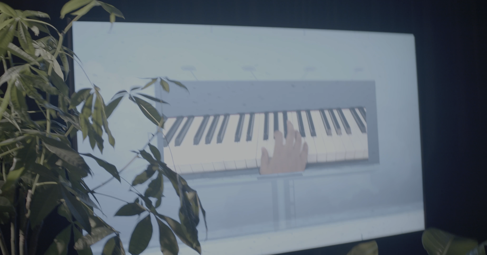
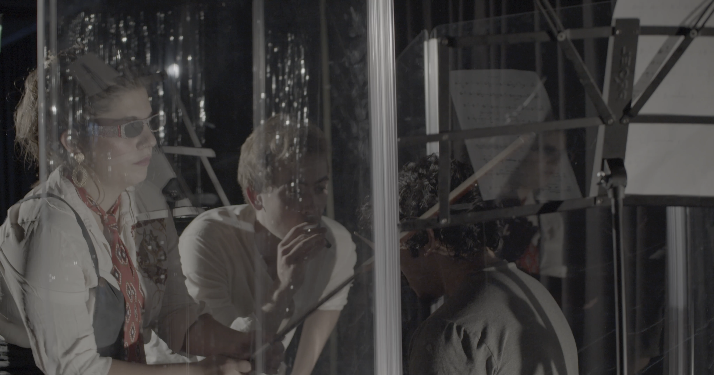
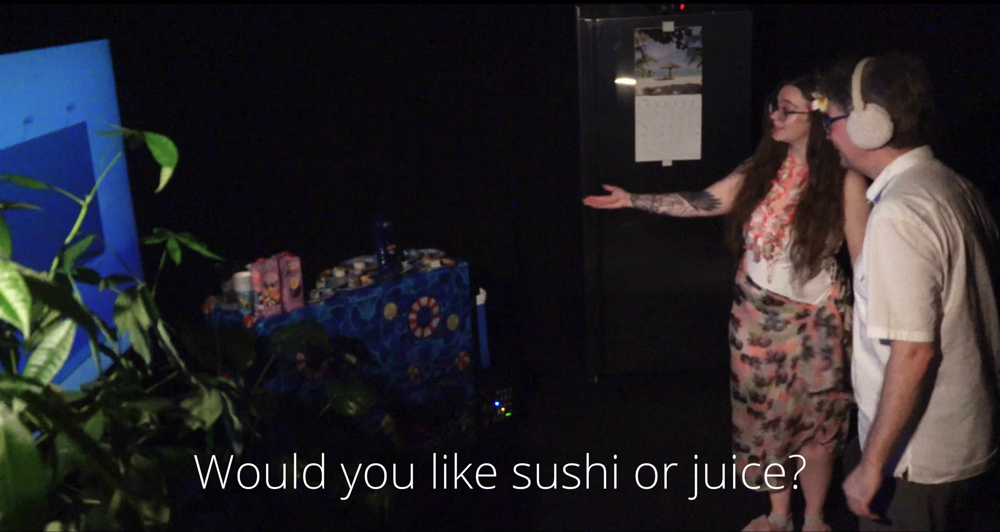

HAPPY NO NEW YEARS
sends audience members through a three-room parcourse that schematizes listening between distance and immersion.



in
One at a time, audience members are sent through a shiny 'new year's door' into the next room. There, they experience 'miniatures' that are heard only acoustically and at close proximity. Each person gets a different miniature, depending on when they're sent through from the first room.
After, the musicians in the second room signal the audience members to move to the third room. There, they are allowed to sit down and relax, enjoying a cool breeze and ambient 'beach' sound design. They are offered sushi and juice. There is a video of the ocean to watch, over which flashes images of musicians playing.
HAPPY NO NEW YEARS
, nobody gets the same experience. The audience first assembles in a new year's-themed waiting room, where they listen to pointillistic music coming from loudspeakers, partially prerecorded and partially played live. Two performers encourage the public to join them in a countdown again and again that seemingly leads nowhere.
One at a time, audience members are sent through a shiny 'new year's door' into the next room. There, they experience 'miniatures' that are heard only acoustically and at close proximity. Each person gets a different miniature, depending on when they're sent through from the first room.
After, the musicians in the second room signal the audience members to move to the third room. There, they are allowed to sit down and relax, enjoying a cool breeze and ambient 'beach' sound design. They are offered sushi and juice. There is a video of the ocean to watch, over which flashes images of musicians playing.
The rooms constitute a schematization of types of listening: virtual, concrete, and situated. Each has its corresponding mode of listening and acoustic-formal properties.
The piece is intended to run multiple times over a given showing, lending it an installative quality that rewards multiple visits.